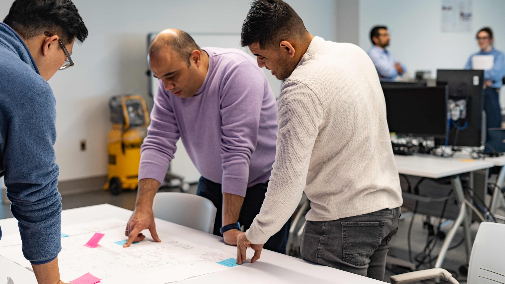
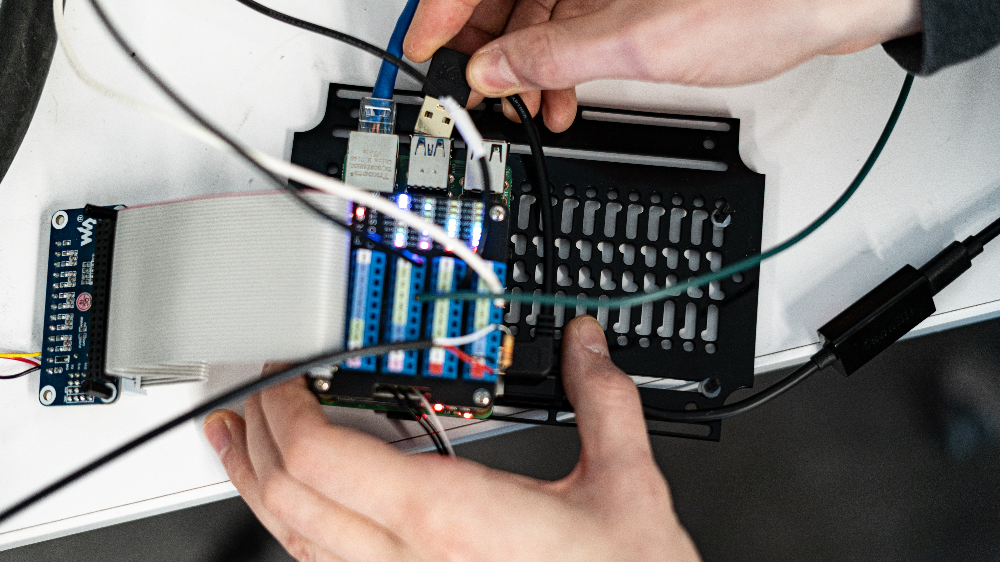

Through the Canada Industrial Research Assistance Program (NRC IRAP), we offer organizations access to external technical expertise to advance projects focused on energy efficiency, carbon reduction, operational efficiency, and power systems.
Energy & Power Innovation Centre (EPIC) implements applied research and sustainability best practices to assess emissions and energy use, identify opportunities to reduce carbon emissions and system inefficiencies, validate electrification strategies, and support long-term, sustainable growth.
The program is funded by NRC-IRAP and is primarily available to companies within its portfolio across Canada.
Ideal for: Companies looking to establish a credible starting point for their carbon reduction strategy, including organizations in manufacturing, construction, and agriculture.
We focus on:
Ideal for: Companies looking to understand the carbon footprint of their products to support sustainability and product-development decisions.
We focus on:

Ideal for: Facilities or processes that require automated data collection to improve reporting, operational efficiency, or product performance.
We focus on:
Ideal for: Companies working with or interacting with electrical power systems that need to collect and analyze data from utility-grade equipment or require advanced, time-based power systems monitoring.
We focus on:
Applications are accepted on a rolling basis.
The program offers approximately 120 hours of work. The expectation is that companies invest 6–8 hours of their time throughout the process.
For IRAP clients, participation in this project is funded by IRAP.
Small and medium-sized enterprises (SMEs) who meet the following criteria will be considered for this service:
Not an IRAP client?
There are still ways to work with us! We encourage you to apply, and we will follow up with alternative ways to collaborate that may suit your business.
We are currently accepting rolling applications and have limited capacity. All interested companies must fill out our application form to be considered for participation.
Apply NowStill have questions? Contact us